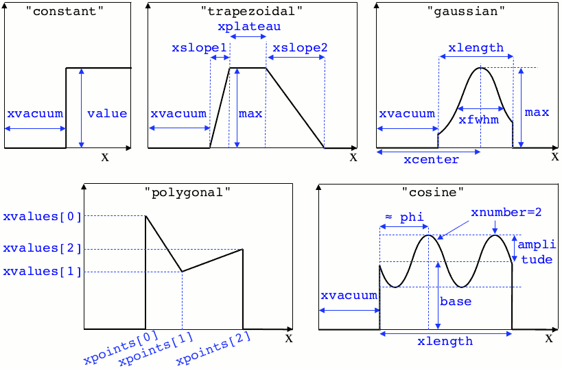
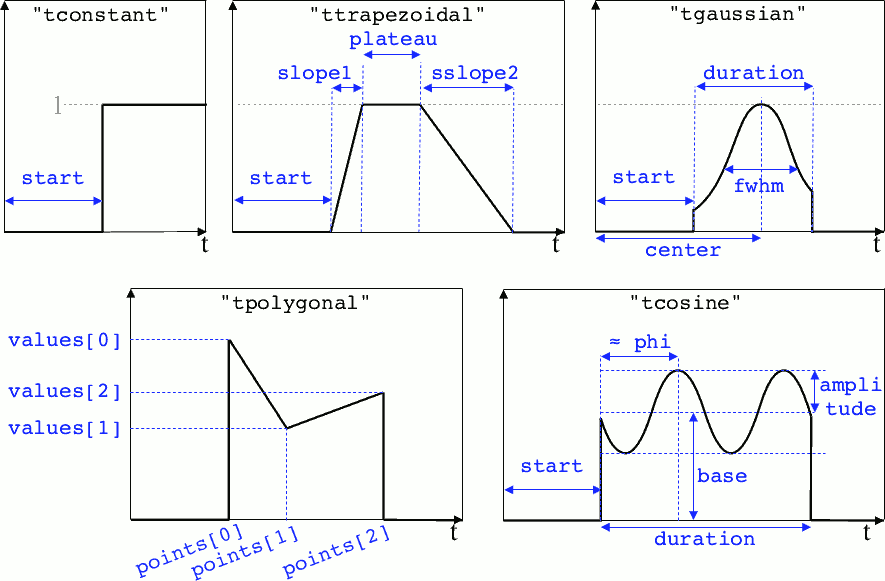

Profiles¶
Several quantities require the input of a profile: particle charge, particle density, external fields, etc. Depending on the case, they can be spatial or temporal profiles.
Constant profiles¶
Species( ... , charge = -3., ... )defines a species with charge \(Z^\star=3\).Species( ... , number_density = 10., ... )defines a species with density \(10\,N_r\). You can choosenumber_densityorcharge_densitySpecies( ... , mean_velocity = [0.05, 0., 0.], ... )defines a species with drift velocity \(v_x = 0.05\,c\) over the whole box.Species(..., momentum_initialization="maxwell-juettner", temperature=[1e-5], ...)defines a species with a Maxwell-Jüttner distribution of temperature \(T = 10^{-5}\,m_ec^2\) over the whole box. Note that the temperature may be anisotropic:temperature=[1e-5, 2e-5, 2e-5].Species( ... , particles_per_cell = 10., ... )defines a species with 10 particles per cell.ExternalField( field="Bx", profile=0.1 )defines a constant external field \(B_x = 0.1 B_r\).
Python profiles¶
Any python function can be a profile. Examples:
def f(x):
if x<1.: return 0.
else: return 1.
import math
def f(x,y): # two variables for 2D simulation
twoPI = 2.* math.pi
return math.cos( twoPI * x/3.2 )
f = lambda x: x**2 - 1.
Once the function is created, you have to include it in the block you want, for example:
Species( ... , charge = f, ... )
Species( ... , mean_velocity = [f, 0, 0], ... )
Note
It is possible, for higher performances, to create functions with arguments (x, y, etc.) that are actually numpy arrays. If the function returns a numpy array of the same size, it will automatically be considered as a profile acting on arrays instead of single floats. Currently, this feature is only available on Species’ profiles.
Pre-defined spatial profiles¶
- constant(value, xvacuum=0., yvacuum=0.)¶
- Parameters
value – the magnitude
xvacuum – vacuum region before the start of the profile.
- trapezoidal(max, xvacuum=0., xplateau=None, xslope1=0., xslope2=0., yvacuum=0., yplateau=None, yslope1=0., yslope2=0.)¶
- Parameters
max – maximum value
xvacuum – empty length before the ramp up
xplateau – length of the plateau (default is
grid_length\(-\)xvacuum)xslope1 – length of the ramp up
xslope2 – length of the ramp down
- gaussian(max, xvacuum=0., xlength=None, xfwhm=None, xcenter=None, xorder=2, yvacuum=0., ylength=None, yfwhm=None, ycenter=None, yorder=2)¶
- Parameters
max – maximum value
xvacuum – empty length before starting the profile
xlength – length of the profile (default is
grid_length\(-\)xvacuum)xfwhm – gaussian FWHM (default is
xlength/3.)xcenter – gaussian center position (default is in the middle of
xlength)xorder – order of the gaussian.
- Note
If
yorderequals 0, then the profile is constant over \(y\).
- polygonal(xpoints=[], xvalues=[])¶
- Parameters
xpoints – list of the positions of the points
xvalues – list of the values of the profile at each point
- cosine(base, amplitude=1., xvacuum=0., xlength=None, xphi=0., xnumber=1)¶
- Parameters
base – offset of the profile value
amplitude – amplitude of the cosine
xvacuum – empty length before starting the profile
xlength – length of the profile (default is
grid_length\(-\)xvacuum)xphi – phase offset
xnumber – number of periods within
xlength
- polynomial(x0=0., y0=0., z0=0., order0=[], order1=[], ...)¶
- Parameters
x0,y0 – The reference position(s)
order0 – Coefficient for the 0th order
order1 – Coefficient for the 1st order (2 coefficients in 2D)
order2 – Coefficient for the 2nd order (3 coefficients in 2D)
etc –
Creates a polynomial of the form
\[\begin{split}\begin{eqnarray} &\sum_i a_i(x-x_0)^i & \quad\mathrm{in\, 1D}\\ &\sum_i \sum_j a_{ij}(x-x0)^{i-j}(y-y0)^j & \quad\mathrm{in\, 2D}\\ &\sum_i \sum_j \sum_k a_{ijk}(x-x0)^{i-j-k}(y-y0)^j(z-z0)^k & \quad\mathrm{in\, 3D} \end{eqnarray}\end{split}\]Each
orderiis a coefficient (or list of coefficents) associated to the orderi. In 1D, there is only one coefficient per order. In 2D, eachorderiis a list ofi+1coefficients. For instance, the second order has three coefficients associated to \(x^2\), \(xy\) and \(y^2\), respectively. In 3D, eachorderiis a list of(i+1)*(i+2)/2coefficients. For instance, the second order has 6 coefficients associated to \(x^2\), \(xy\), \(xz\), \(y^2\), \(yz\) and \(z^2\), respectively.
Examples:
Species( ... , density = gaussian(10., xfwhm=0.3, xcenter=0.8), ... )
ExternalField( ..., profile = constant(2.2), ... )
Illustrations of the pre-defined spatial profiles
Pre-defined temporal profiles¶
- tconstant(start=0.)¶
- Parameters
start – starting time
- ttrapezoidal(start=0., plateau=None, slope1=0., slope2=0.)¶
- Parameters
start – starting time
plateau – duration of the plateau (default is
simulation_time\(-\)start)slope1 – duration of the ramp up
slope2 – duration of the ramp down
- tgaussian(start=0., duration=None, fwhm=None, center=None, order=2)¶
- Parameters
start – starting time
duration – duration of the profile (default is
simulation_time\(-\)start)fwhm – gaussian FWHM (default is
duration/3.)center – gaussian center time (default is in the middle of
duration)order – order of the gaussian
- tpolygonal(points=[], values=[])¶
- Parameters
points – list of times
values – list of the values at each time
- tcosine(base=0., amplitude=1., start=0., duration=None, phi=0., freq=1.)¶
- Parameters
base – offset of the profile value
amplitude – amplitude of the cosine
start – starting time
duration – duration of the profile (default is
simulation_time\(-\)start)phi – phase offset
freq – frequency
- tpolynomial(t0=0., order0=[], order1=[], ...)¶
- Parameters
t0 – The reference position
order0 – Coefficient for the 0th order
order1 – Coefficient for the 1st order
order2 – Coefficient for the 2nd order
etc –
Creates a polynomial of the form \(\sum_i a_i(t-t_0)^i\).
- tsin2plateau(start=0., fwhm=0., plateau=None, slope1=fwhm, slope2=slope1)¶
- Parameters
start – Profile is 0 before start
fwhm – Full width half maximum of the profile
plateau – Length of the plateau
slope1 – Duration of the ramp up of the profil
slope2 – Duration of the ramp down of the profil
Creates a sin squared profil with a plateau in the middle if needed. If slope1 and 2 are used, fwhm is overwritten.
Example:
Antenna( ... , time_profile = tcosine(freq=0.01), ... )
Illustrations of the pre-defined temporal profiles
Extract the profile from a file¶
The following profiles may be given directly as an HDF5 file:
Species.charge_densitySpecies.number_densitySpecies.particles_per_cellSpecies.chargeSpecies.mean_velocitySpecies.temperatureExternalField.profileexcept when complex (cylindrical geometry)
You must provide the path to the file, and the path to the dataset
inside the file.
For instance charge_density = "myfile.h5/path/to/dataset".
The targeted dataset located in the file must be an array with the same dimension and the same number of cells as the simulation grid.
Warning
For ExternalField, the array size must take into account the
number of ghost cells in each direction. There is also one extra cell
in specific directions due to the grid staggering (see this doc).